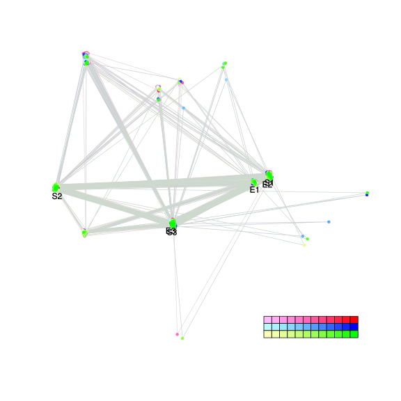
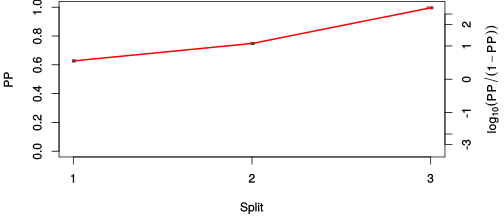
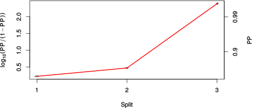

| chain # | burnin | subsample | Iterations (remaining) | command line | subdirectory | directory |
|---|---|---|---|---|---|---|
| 1 | 10000 | 1 | 90000 | /home/willemsen/software/bali-phy-3.0-beta2/bin/bali-phy E6_AA_red3_v2_BetaGamma.fas -s 56643 -n BetaGamma_c1 | BetaGamma_c1-1 | /DATA/work/ONCOGENEVOL/database/trees/Bali-Phy/E6 |
| 2 | 10000 | 1 | 90000 | /home/willemsen/software/bali-phy-3.0-beta2/bin/bali-phy E6_AA_red3_v2_BetaGamma.fas -s 83831 -n BetaGamma_c2 | BetaGamma_c2-1 | /DATA/work/ONCOGENEVOL/database/trees/Bali-Phy/E6 |
| 3 | 10000 | 1 | 90000 | /home/willemsen/software/bali-phy-3.0-beta2/bin/bali-phy E6_AA_red3_v2_BetaGamma.fas -s 73839 -n BetaGamma_c3 | BetaGamma_c3-1 | /DATA/work/ONCOGENEVOL/database/trees/Bali-Phy/E6 |
| P(data|M) = -2192.475 +- 0.101 | Complete sample: 52 topologies | 95% Bayesian credible interval: 11 topologies |
Phylogeny Distribution

| Partition support: Summary |
| Partition support graph: SVG |
{kind=link}
| 50% consensus | Newick (+PP) | SVG | |||||
| 66% consensus | Newick (+PP) | SVG | |||||
| 80% consensus | Newick (+PP) | SVG | |||||
| 90% consensus | Newick (+PP) | SVG | |||||
| 95% consensus | Newick (+PP) | SVG | |||||
| 99% consensus | Newick (+PP) | SVG | |||||
| 100% consensus | Newick (+PP) | SVG | |||||
| MAP | Newick (+PP) | SVG | |||||
| greedy | Newick (+PP) | SVG |
{kind=link}
{kind=link}
{kind=link}
{kind=link}
{kind=link}
{kind=link}
{kind=link}
{kind=link}
Alignment Distribution
Partition 1
| Diff | Min. %identity | # Sites | Constant | Informative | ||||
|---|---|---|---|---|---|---|---|---|
| Initial | FASTA | HTML | Diff | 4.15% | 217 | 1 (0.461%) | 35 (16.1%) | |
| Best (WPD) | FASTA | HTML | AU | 20.1% | 220 | 22 (10%) | 43 (19.5%) |
Mixing
{kind=link}
{kind=link}
| burnin (scalar) | ESS (scalar) | ESS (partition) | ASDSF | MSDSF | PSRF-CI80% | PSRF-RCF |
|---|---|---|---|---|---|---|
| 3294 | 3489 | 11672.072 | 0.001 | 0.002 | 1.001 | 1.006 |
Projection of RF distances for the first 3 chains3D | Variation of split PPs across chains |
Scalar variables
| Statistic | Median | 95% BCI | ACT | ESS | burnin | PSRF-CI80% | PSRF-RCF |
|---|---|---|---|---|---|---|---|
| prior | -88.98 | (-106.4, -74.88) | 76.2 | 3543 | 1009 | 1.001 | 0.9908 |
| prior_A1 | -64.61 | (-79.26, -57.93) | 7.214 | 37426 | 127 | 0.9997 | 0.9987 |
| likelihood | -2184 | (-2194, -2175) | 8.367 | 32268 | 231 | 1 | 0.9975 |
| logp | -2274 | (-2291, -2258) | 77.39 | 3488 | 625 | 1 | 0.9905 |
| Heat.beta | 1 | ||||||
| Scale1 | 3.659 | (1.612, 6.984) | 1.005 | 268793 | 149 | 1 | 0.9999 |
| S1.F.pi.A | 0.07435 | (0.0552, 0.09512) | 7.766 | 34767 | 73 | 1 | 0.9988 |
| S1.F.pi.R | 0.06218 | (0.04433, 0.08203) | 7.513 | 35939 | 316 | 0.9995 | 0.9975 |
| S1.F.pi.N | 0.0326 | (0.02062, 0.04585) | 7.816 | 34545 | 396 | 1 | 1.001 |
| S1.F.pi.D | 0.03188 | (0.01904, 0.04669) | 8.088 | 33384 | 443 | 1 | 0.9967 |
| S1.F.pi.C | 0.07335 | (0.05085, 0.0978) | 8.023 | 33653 | 329 | 0.9999 | 0.9969 |
| S1.F.pi.Q | 0.03351 | (0.02208, 0.04659) | 8.035 | 33601 | 380 | 1 | 1.006 |
| S1.F.pi.E | 0.04445 | (0.02968, 0.06073) | 8.066 | 33475 | 618 | 1 | 1.003 |
| S1.F.pi.G | 0.061 | (0.04057, 0.08301) | 7.994 | 33776 | 597 | 1 | 0.9969 |
| S1.F.pi.H | 0.0217 | (0.01149, 0.03373) | 8.08 | 33416 | 304 | 1 | 0.9974 |
| S1.F.pi.I | 0.04933 | (0.0343, 0.06602) | 7.987 | 33807 | 507 | 1 | 1 |
| S1.F.pi.L | 0.1365 | (0.1089, 0.1663) | 7.365 | 36660 | 570 | 1 | 1.001 |
| S1.F.pi.K | 0.03451 | (0.0221, 0.0487) | 8.025 | 33646 | 225 | 0.9999 | 0.9963 |
| S1.F.pi.M | 0.01439 | (0.006974, 0.02383) | 7.897 | 34189 | 368 | 0.9999 | 1.005 |
| S1.F.pi.F | 0.05942 | (0.04122, 0.07961) | 7.722 | 34965 | 569 | 1 | 1.001 |
| S1.F.pi.P | 0.03494 | (0.02064, 0.05169) | 7.838 | 34447 | 368 | 0.9999 | 1.004 |
| S1.F.pi.S | 0.0485 | (0.03377, 0.0655) | 8.268 | 32655 | 371 | 0.9999 | 0.9986 |
| S1.F.pi.T | 0.05038 | (0.03418, 0.06762) | 7.659 | 35254 | 446 | 0.9999 | 1 |
| S1.F.pi.W | 0.01817 | (0.007999, 0.03024) | 8.839 | 30547 | 305 | 0.9999 | 0.9979 |
| S1.F.pi.Y | 0.04818 | (0.03155, 0.0667) | 7.679 | 35163 | 387 | 0.9996 | 1 |
| S1.F.pi.V | 0.06124 | (0.04416, 0.08033) | 8.22 | 32846 | 314 | 1.001 | 1.005 |
| I1.RS07.meanIndelLengthMinus1 | 13.64 | (5.302, 26.97) | 2.378 | 113537 | 107 | 1 | 0.9993 |
| I1.RS07.logLambda | -5.06 | (-5.913, -4.285) | 1.305 | 206838 | 116 | 1 | 0.9988 |
| |A1| | 220 | (218, 224) | 17.34 | 15568 | 3294 | 0.75 | 1.001 |
| #indels1 | 6 | (6, 8) | 7.266 | 37157 | 64 | 0.5 | 0.9992 |
| |indels1| | 85 | (84, 95) | 2.605 | 103657 | 163 | 0.8571 | 0.9995 |
| #substs1 | 364 | (359, 368) | 5.667 | 47642 | 138 | 0.8 | 0.9994 |
| Scale1*|T| | 4.615 | (4.075, 5.187) | 1.816 | 148646 | 261 | 0.9999 | 1.002 |
| |A| | 220 | (218, 224) | 17.34 | 15568 | 3294 | 0.75 | 1.001 |
| #indels | 6 | (6, 8) | 7.266 | 37157 | 64 | 0.5 | 0.9992 |
| |indels| | 85 | (84, 95) | 2.605 | 103657 | 163 | 0.8571 | 0.9995 |
| #substs | 364 | (359, 368) | 5.667 | 47642 | 138 | 0.8 | 0.9994 |
| |T| | 1.262 | (0.5202, 2.278) | 1 | 270003 | 167 | 1 | 0.9998 |